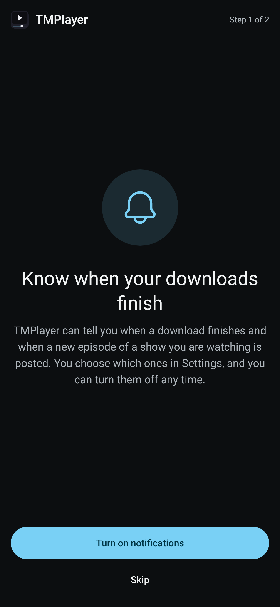
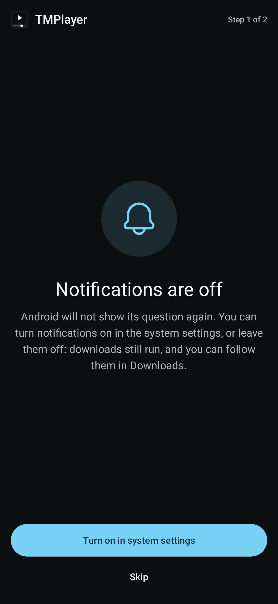
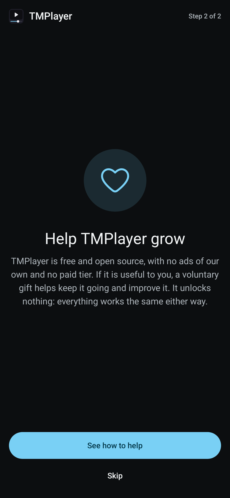
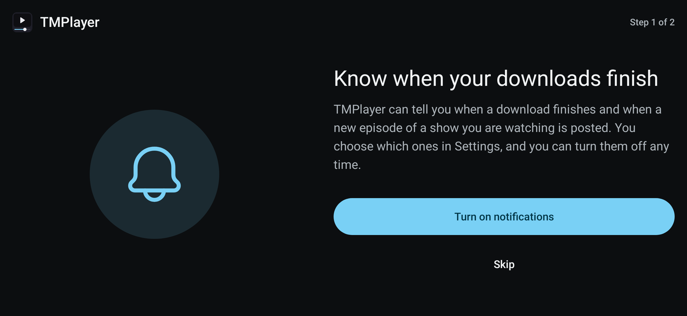
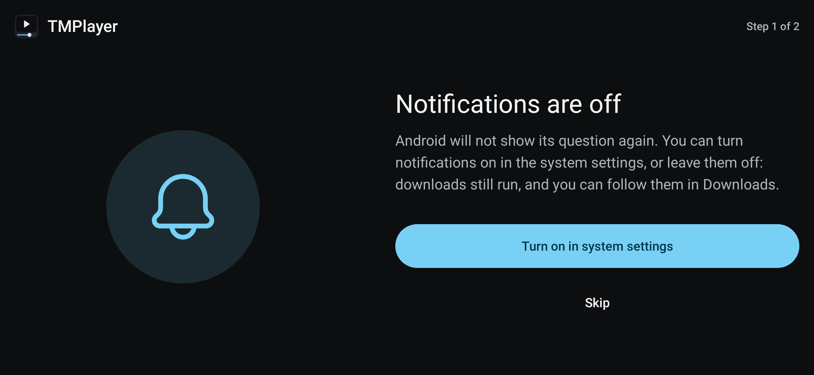
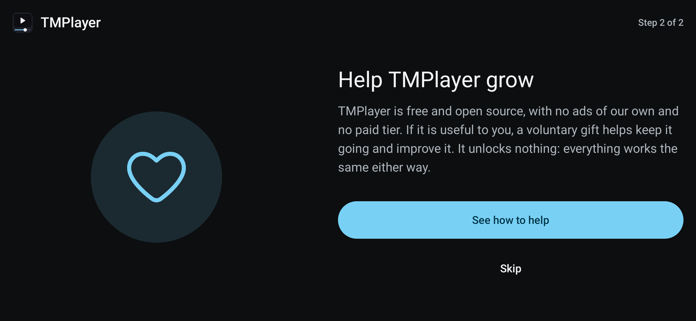
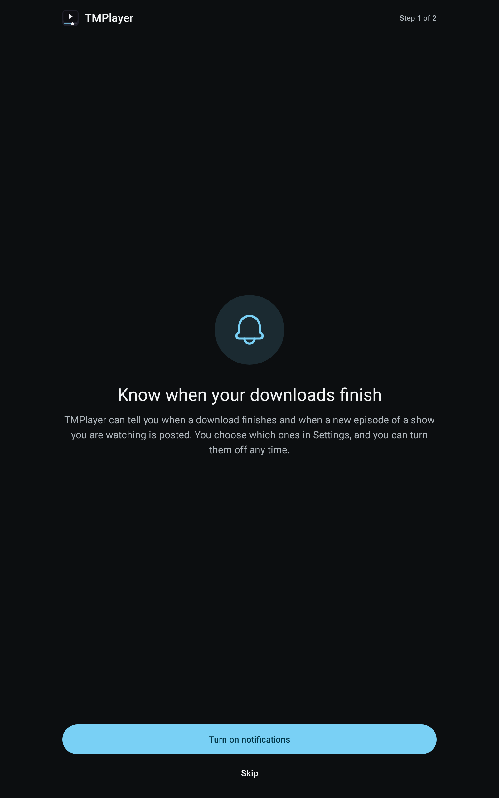
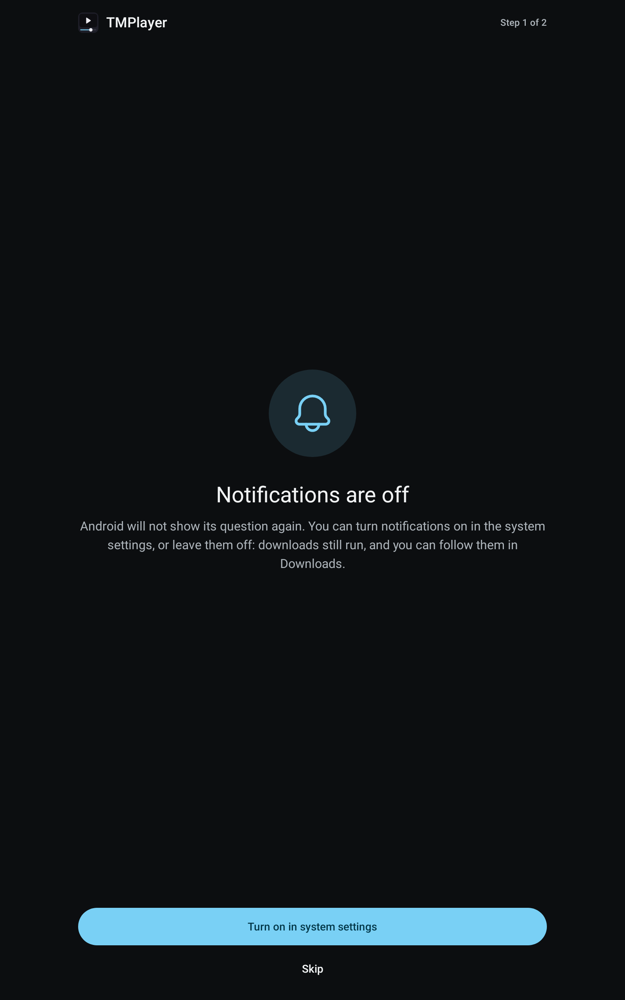
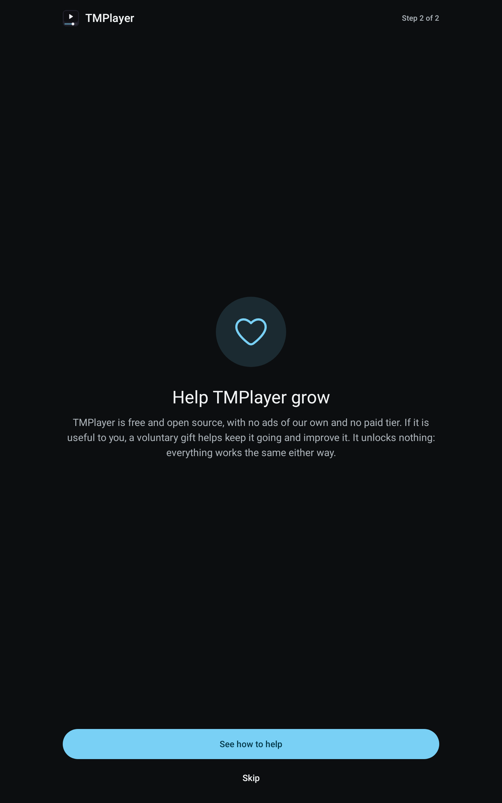
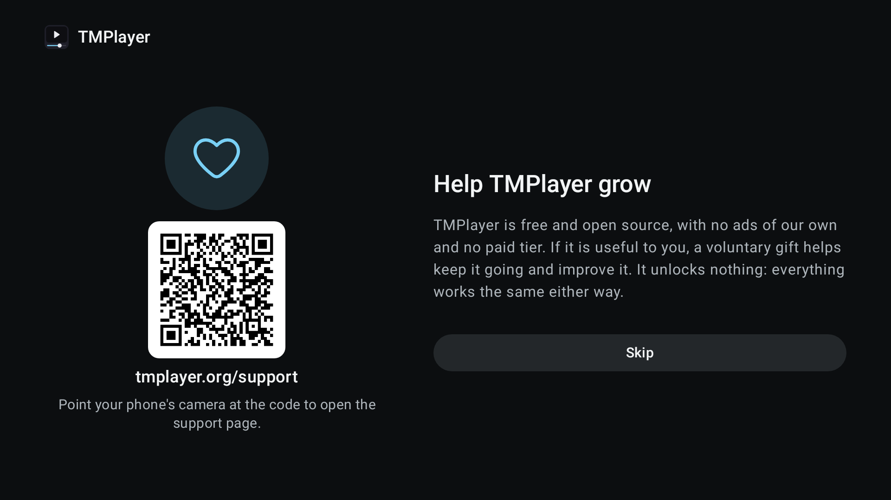

Rendered by OnboardingStepShots (app render tests, dark theme, reduced motion so each step is shown at rest). They come after the chats question and before Home. Phone portrait 411 x 891 dp, landscape 891 x 411 dp, tablet 800 x 1280 dp, TV 960 x 540 dp. The TV has no notification step; its support step shows the page as a code and Skip holds the remote.









